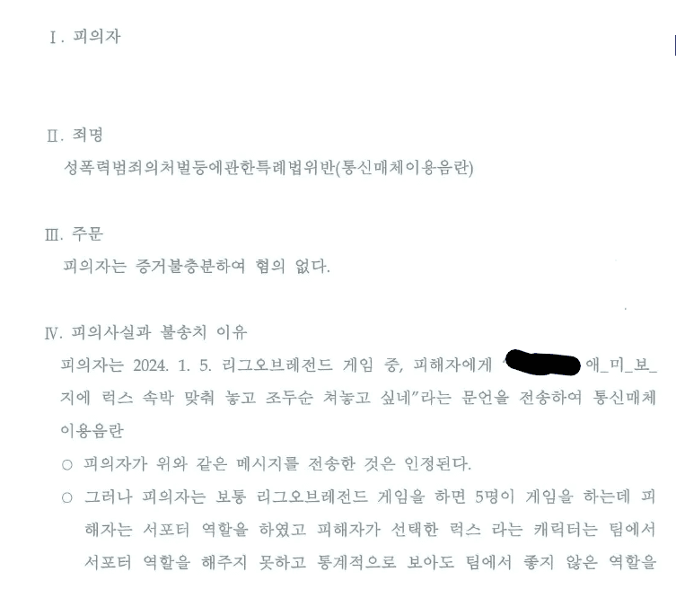

경찰이 봐도 서포터못했다함

경찰이 봐도 서포터못했다함
이거 통매음으로 걸리나.
온리 모욕인거같은데
생식기관이 들어갔잖어
럭포터 바텀 뻥뻥 존나 잘크는데 희안하게 중후반가면 게임이 짐
브루저 억제력이 q에만 몰빵돼있는데 투사체 속도가 스티븐호킹 뛰어가는 속도랑 비비니…
못뛰잖아..
ㄹㅇ 그럴거면 니코가 낫지
서포터대신 망한미드니까 5:5 전투력은 밀리는거
요즘은 걍 어지간하면 몽땅 불송치임
알겠나 판결문에도 럭스 서폿은 개씨발년이라고 못박는거.그러니까 럭스 서폿 하지 말라고
케리아 아니면.
그럼 가렌 서폿은?
눈도 깜짝 안한다!!!!!
본문이랑 별개로 럭포터랑 미포터 못하면 과장없이 유미보다 쓸모없더라
유미는 좋은데...
마법털바퀴무시함?
옹호하는건 아니고 통매음으로 합의금 벌이 유행했었는데 그거때문에 빡세졌나
ㅇㅇ 맞음 ㅋㅋㅋ
저거 보니까 변호사 광고에 애미뭐시기 무죄로 광고하던거 생각나네 ㅅㅂㅋㅋㅋㅋ
법원의 잘못된 법해석을 수사기관이 바로잡은 사례로 봐도 무방하다고 생각
사법상의 정의는 최종적으로 법원에 의해 이루어진다는 원칙의 예외 케이스일듯
이제 수사도 안해주면?
밑에 부분 ㅋㅋ 왜 디테일하냐 ㅋㅋ